EarthlogDesigned and built · 13 min read
A globe that tells you what happened here, and how sure it is.
EarthLog is a web app I designed and built on my own. Click anywhere on Earth and it shows the quakes, NASA events, weather, night sky and landmark disasters around that point, each with its source, its age and its limits.
- Role
- Design and build, solo
- Timeline
- August 2026
- For
- My own project, no client
- Platform
- Web, on desktop and phone
- Stack
- Plain HTML, CSS and JavaScript, MapLibre GL JS 5, Open Props
- Status
- Live. No usage numbers, no user testing and no claim of scientific validation

In short
- The problem: a measured quake, an old NASA record, a forecast and a worked-out eclipse all look the same as dots on a map. They are not equally fresh or equally sure.
- What I built: a globe in the browser that answers from a place or from a question, with each answer showing its source, its age and how far to trust it.
- The key idea: an open record is not an event happening now. I grade NASA events by when they were last seen, and put each model’s error next to its answer.
- Where it stands: live on the web, built over three days in August 2026. I have no usage numbers, and there are no automated tests yet.
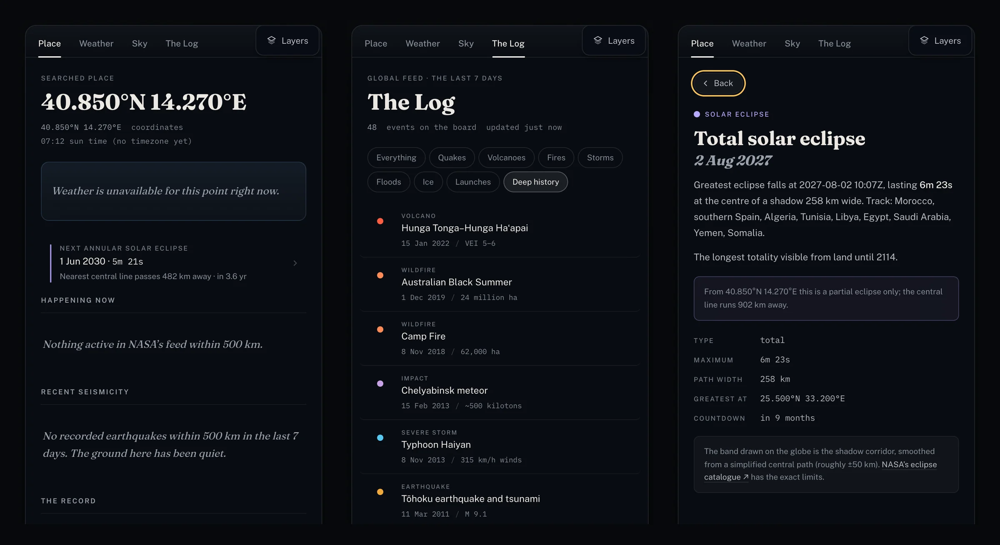
01 Why I built it
A dot on a map hides how old and how sure it is
I wanted one place to ask what the planet is doing at any spot: the weather now, this week’s quakes, this century’s disasters and what is overhead tonight. I also wanted the reverse question. Where was the last big quake? Where does the next total eclipse land?
The data is free and public. The trouble is that it comes in different kinds. Some is measured by instruments. Some is a record nobody has closed. Some is a forecast, some is worked out from orbits, and some is a plan that may slip.
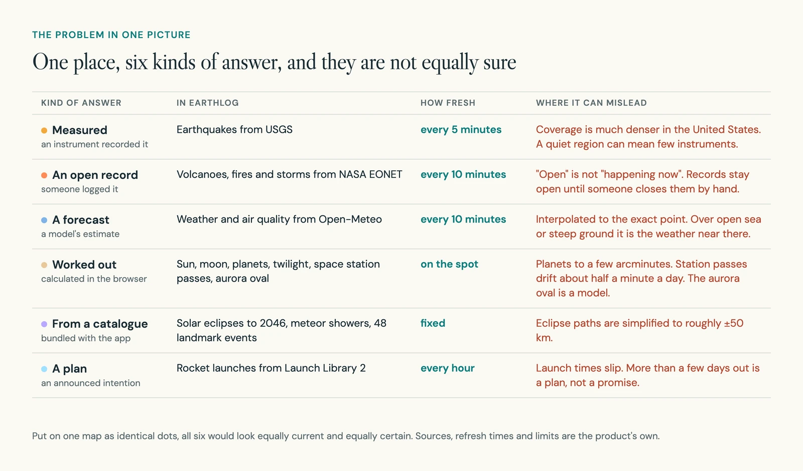
Draw all of that as the same coloured dot and the map looks more certain than it is. So the design problem was to make each answer easy to find and easy to question.
02 How it works
Start from a place or from a question, and land on the same readout
A globe fills the screen. As you zoom in, it unrolls into a flat map. A readout panel on the right has four tabs: Place, Weather, Sky and The Log.
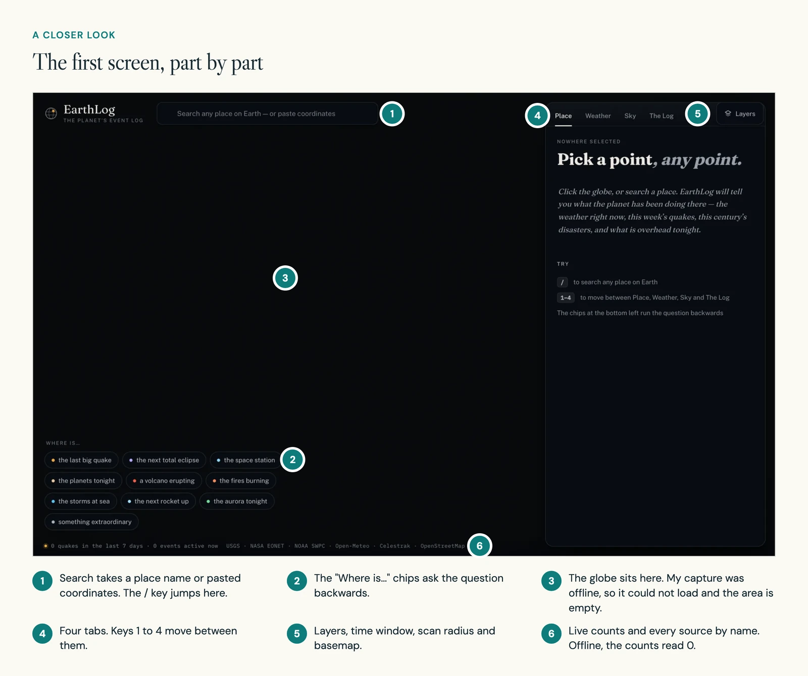
You can pick a point by clicking the globe, typing a name or pasting coordinates. Or you can press one of ten “Where is…” chips, which run the question the other way round.
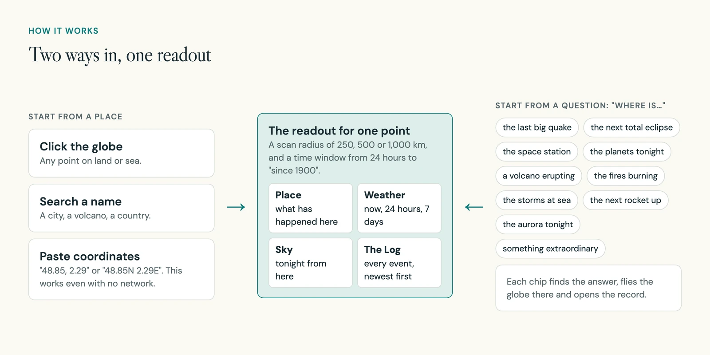
The Place tab is a short report on that point, always in the same order. The things that change by the hour come first. The deep past and the night sky come last.
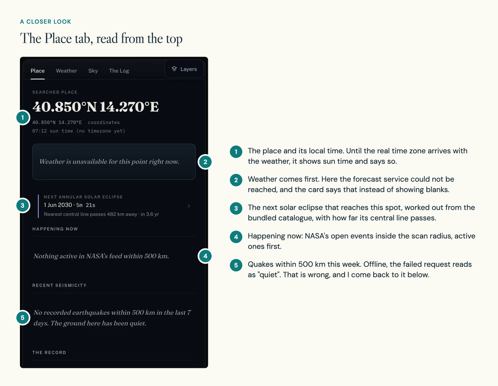
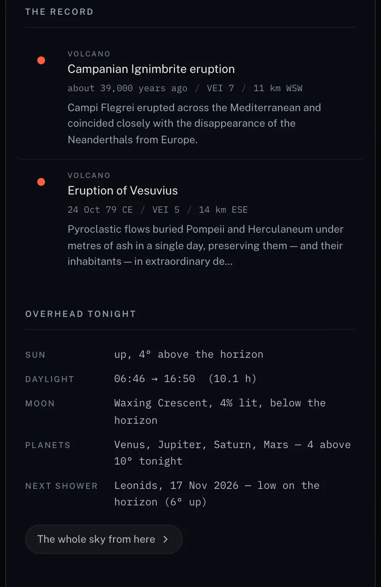
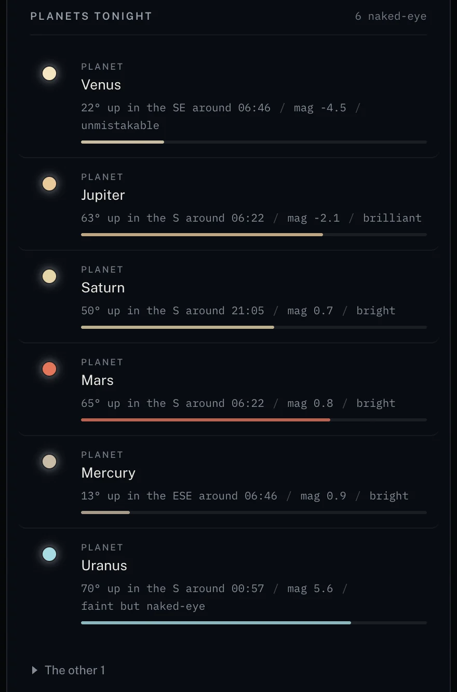
The Log is the whole board in one list, newest first, with filters by kind. A deep-history filter lists the 48 landmark events that ship with the app.
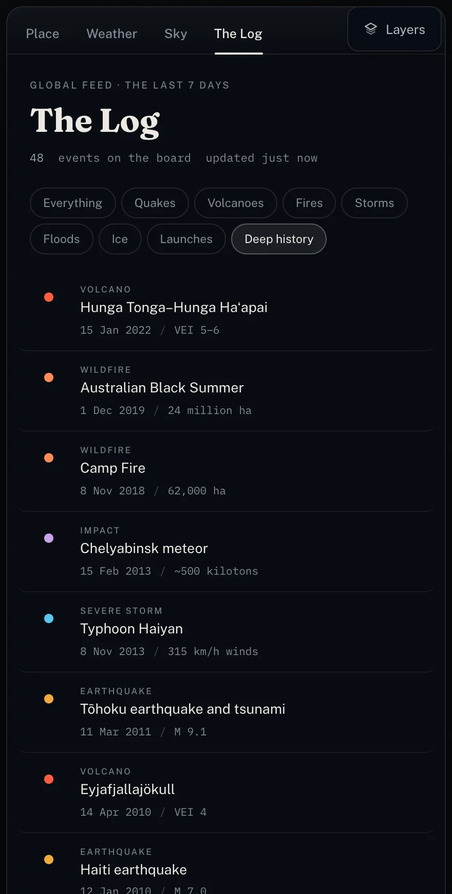
03 Decision 1
Ten chips that answer “where” as well as “what is here”
What you see: a row of chips under the globe, such as “the last big quake” and “the next total eclipse”. Each one finds the answer, flies the globe there and opens the record.
Someone may be curious about the latest earthquake without knowing where it happened. Making them search for a place first would ask a question they cannot answer.
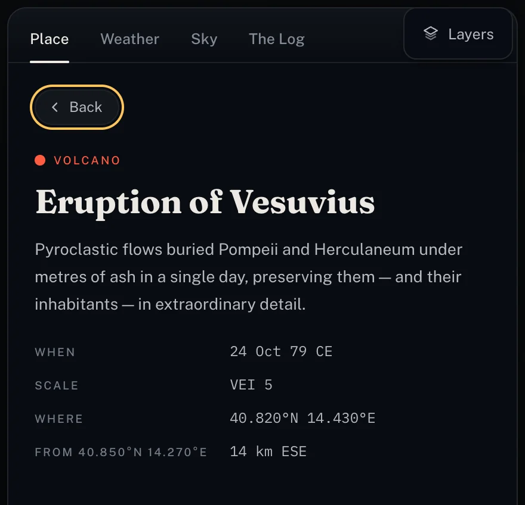
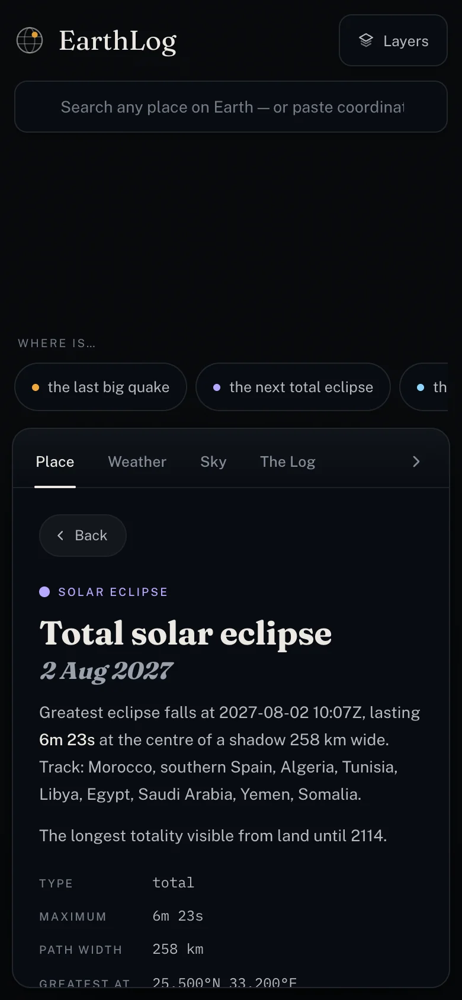
In the build: each chip is a small query over data the app holds or can fetch. Some need no network. The next total eclipse and something extraordinary come from lists bundled with the app, and the planets are worked out in the browser. The rest wait on live feeds.
The chips and the place search had to arrive at the same record view. Every record has a Back button that returns to the tab you came from.
04 Decision 2
An open NASA record is not an event happening now
What you see: each NASA event is labelled active, ongoing or ended, with when it was last seen. The status line at the bottom counts only the active ones.
In the build: NASA’s EONET feed keeps an event open until someone closes it by hand. It holds over 2,000 open wildfire records, most of them long out, and volcanoes whose last satellite fix is a year old. Counting “open” would have made the planet look on fire.
So I grade every event by its most recent observation, not by its status.
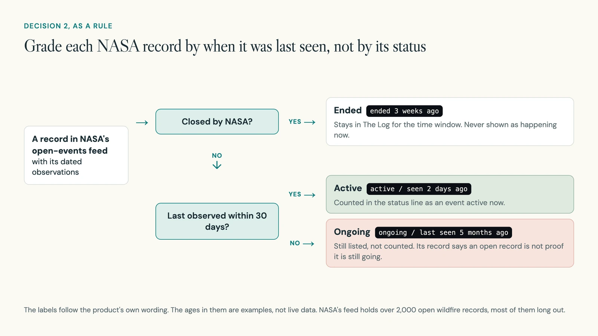
The record view says the same in words. For an ongoing event it gives the date it was last seen and adds that an open record is not proof it is still going.
05 Decision 3
Each answer carries its own error, right where you read it
What you see: under an eclipse, a space station pass or a forecast, a short note says how far to trust it, in plain words.
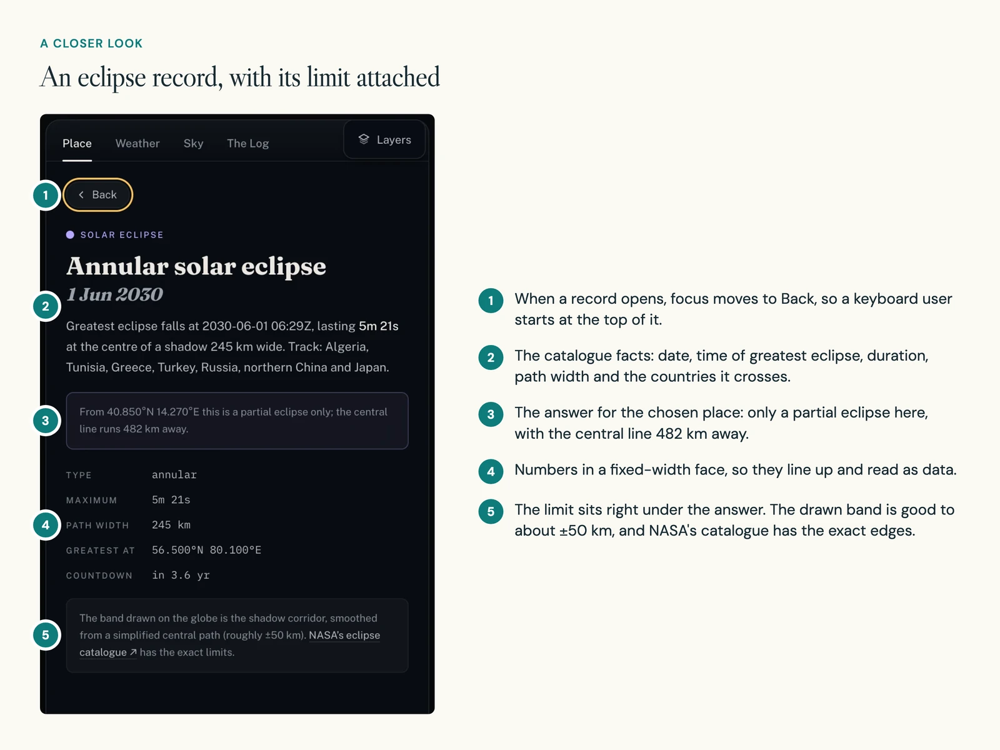
In the build: I chose simple models that run in the browser with no server. That makes them fast and free, and less exact. So the notes had to be specific.
| Answer | How it is worked out | How far to trust it |
|---|---|---|
| Eclipse paths | Dates and widths from NASA’s Five Millennium Canon. Each path is a dozen-odd points, smoothed into a curve. | About ±50 km. Enough to see if it crosses your region, not to choose a viewing spot. |
| Space station passes | A Kepler + J2 orbit model, simpler than SGP4, the usual standard. | Drifts about half a minute a day from its starting data. |
| Planets | JPL’s approximate orbital elements. | A few arcminutes. Fine for “is it up”, not for a narrow telescope view. |
| Aurora | A model from the current geomagnetic index. | Real aurora is patchy and moves fast. |
| Weather | Open-Meteo’s forecast, interpolated to the exact point. | The weather near there, not a station reading. |
| Local time | Sun time from longitude, until the real time zone arrives. | Can be an hour or more off the clock on the wall. |
| Quiet areas | USGS earthquake coverage. | Much denser in the United States. A quiet map can mean few instruments. |
A space station pass is only called visible when the station is in sunlight, above your horizon, and your own sky is dark. Far north or south of its orbit, the app explains that the station can never climb high, instead of just saying there are no passes.
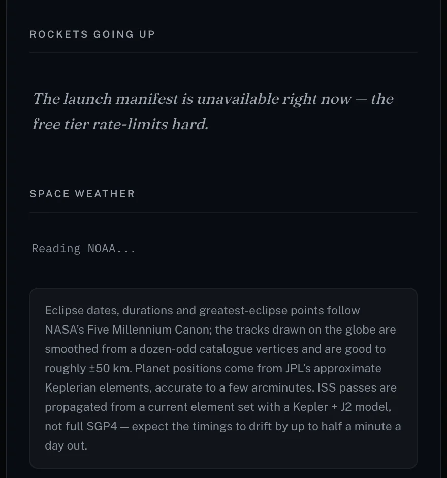
06 Decision 4
Draw the next three eclipses, not all 22
What you see: the globe draws the next three eclipse paths and dims everything except what is open in the panel. Layers lets you show the next 8, or all 22 in the catalogue.
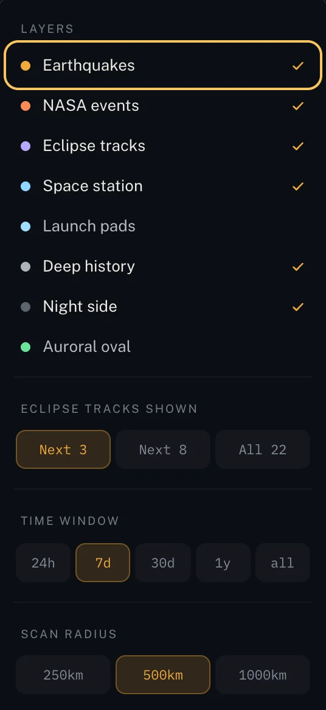
In the build: twenty-two eclipse tracks drawn at once was the problem this rebuild set out to fix. The globe could not be read. Each track is now smoothed into a curve and drawn as the band of the shadow, not a thin line. The eclipse that matters to the chosen place stays on screen even when it is not one of the next three.
The camera had the same kind of problem. Choosing a place fired one move straight away and a second a moment later, when the place’s outline arrived. The two raced, and if the map was still loading the move was lost. Now each choice makes exactly one camera move, which waits until the map exists.
07 The build
Plain files in the browser, and a globe that needed care
EarthLog has no framework, no build step and no accounts. Every source is a free public feed that needs no key, so the whole app is a folder of files.
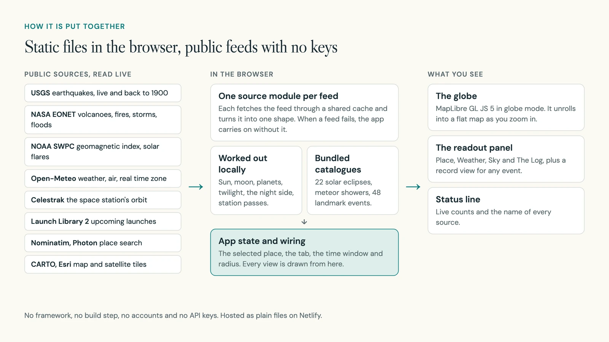
| Part | What I used |
|---|---|
| Globe and map | MapLibre GL JS 5 in globe mode, with CARTO’s dark map and Esri satellite imagery |
| Look | Open Props tokens plus my own colour tokens; Fraunces, Public Sans and IBM Plex Mono |
| Astronomy | My own code for the sun, moon, planets, twilight and the line between day and night |
| Orbits | My own Kepler + J2 model for the space station’s track and passes |
| Hosting | Netlify, serving the files as they are |
- 5
- commits, 19 to 21 August 2026
- 16
- JavaScript files, about 5,300 lines
- 8
- kinds of public source, none needing a key
- 0
- automated tests so far
The first commit is already a rebuild. The earlier version is not in the history, so I cannot show a before and after.
The hardest problems were in the globe, not the panel.
| Area | What went wrong, and what I changed |
|---|---|
| Colour from space | The dark map paints water lighter than land, so from orbit the Earth read as a flat grey ball. I flipped land and sea with zoom ramps, and hand back to the map’s own colours at street level. |
| Atmosphere | The haze that gives the globe its edge painted a street map solid black. The library did not update it while zooming, so I set the values myself on every zoom step. |
| Size | The globe’s width on screen is 256 pixels times 2 to the power of the zoom. I work the starting zoom out from that, so the sphere fills the space beside the panel. |
| Phones | When the web fonts arrived they changed the header’s height, and the globe stayed sized for the first guess. It now re-fits once the fonts settle. |
| A missing map | If the map style has not arrived after 12 seconds, a bare globe takes its place so the data layers still draw. |
08 Accessibility
Dark, but every word clears the AA contrast level
Dark designs often fade small text into the background. I set a floor instead. Contrast ratio measures how far apart two colours are in brightness, and body text needs at least 4.5 to 1 under WCAG AA, the common accessibility standard.
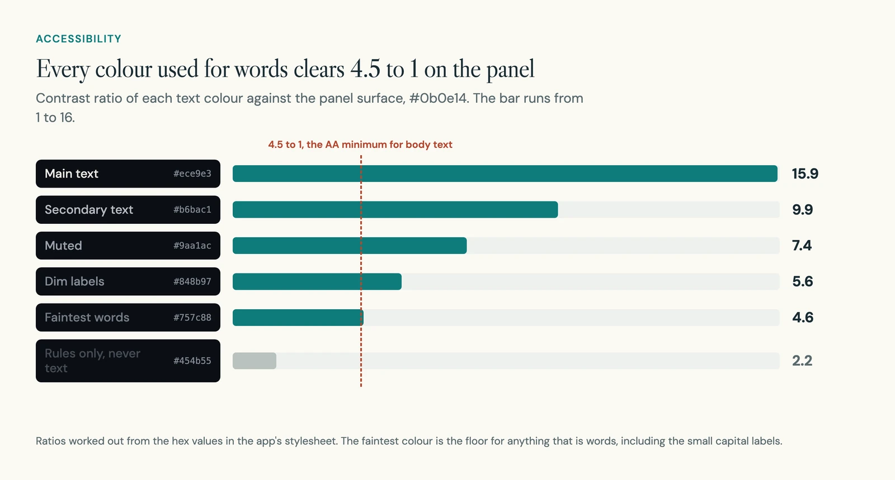
- Keyboard: / jumps to search, 1 to 4 switch tabs, Esc leaves a record, and the arrow keys move through tabs and search results. Two skip links lead past the globe.
- The tabs and the search box follow the standard ARIA patterns. ARIA is a set of labels that tell a screen reader what a control is and what state it is in.
- A live region reads out one short sentence when the view changes, rather than the whole panel.
- Touch targets are 44 pixels on touch screens. The app follows the system settings for reduced motion and for higher contrast.
- When a record opens, focus moves to its Back button, so a keyboard user starts at the top.
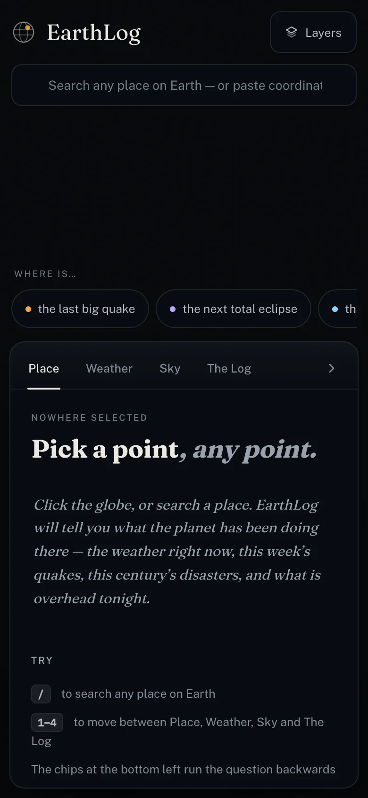
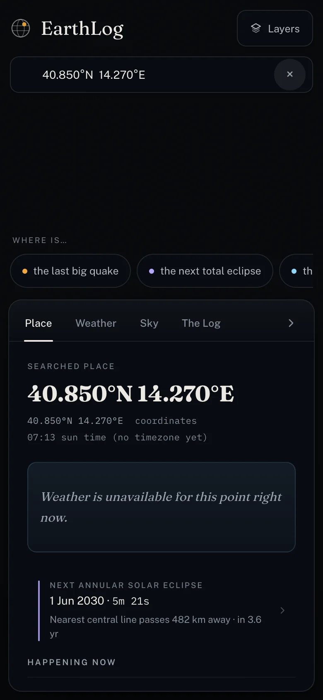
09 Where it stands
Live, with no usage numbers, and a gap my offline screens exposed
EarthLog is live at earthlog.srinidhibhat.com. I have no visitor numbers or feedback to share.
I took every screen on this page with no network, so the globe, the map tiles and the live feeds could not load. That turned out to be a useful test. Some failures are handled well. The weather card and the space station section both say plainly that their source could not be reached.
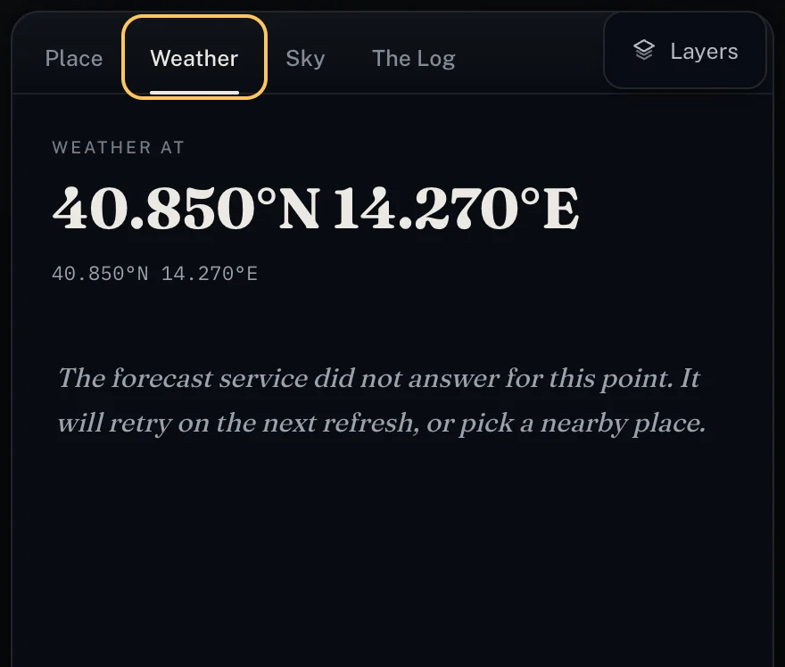
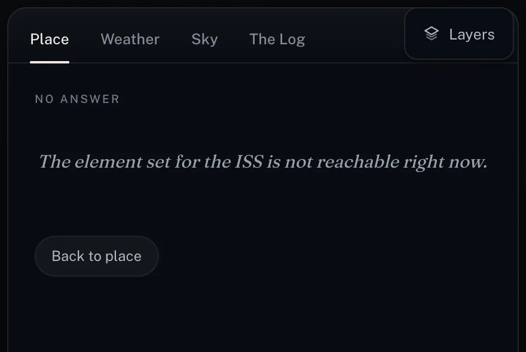
Others are not. A failed quake request reads as a quiet week: “The ground here has been quiet.” The status line counts 0 quakes. The Log says “updated just now” over an empty list, and one chip shows a raw browser error.
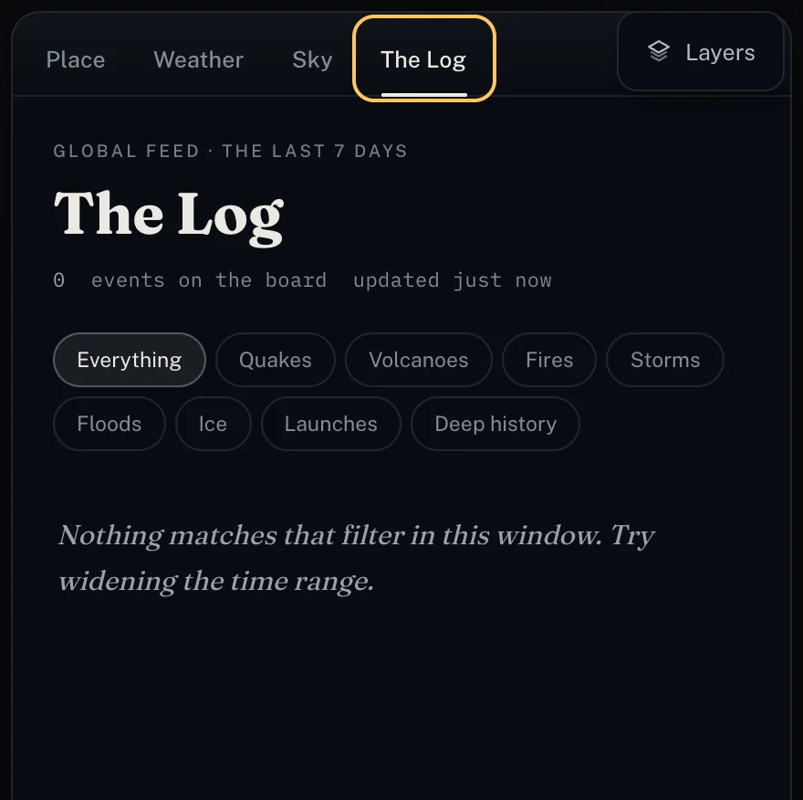
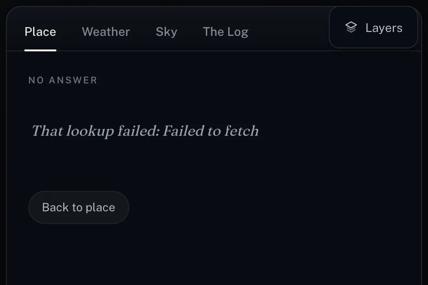
10 What is next
Tell a failed feed apart from a calm planet, then test with people
- Give every feed its own failed state, so “no quakes” and “could not reach USGS” never look the same, in the panel, the status line or The Log.
- Fix the moon icon. My captures showed a 4% crescent drawn as an almost full disc.
- Add tests for the astronomy and orbit maths, checked against published tables.
- A first test with people: ask them to explain one result in their own words. What happened, when was it seen, and where did the information come from? Finding an event is only half the task.
11 What I learned
An empty list has to know why it is empty
Most of the design work was not the globe. It was deciding how sure each answer is, and saying so in plain words right beside it.
The offline screens showed me where I stopped short. I wrote careful notes for every model, then let a failed request tell people the ground had been quiet. Honesty about a model is not enough if the app is not also honest about its own connection.
Learning chess on a different board.